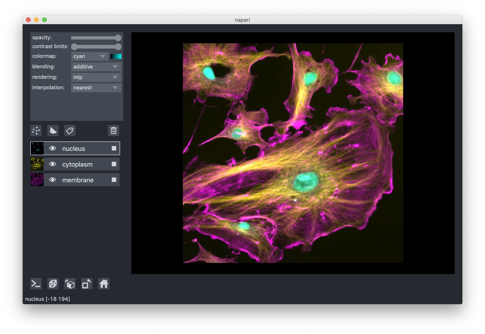
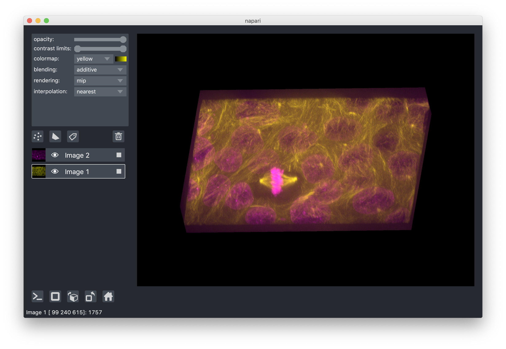

Layers at a glance¶
Layers are the basic viewable objects that can be added to a
viewer. napari supports seven main different layer types: Image, Labels,
Points, Shapes, Surface, Tracks and Vectors. Each of the layer types
corresponds to a different data type, visualization, and interactivity. You can
add multiple layers of different types into the viewer and then start working
with them, adjusting their properties.
All our layer types support n-dimensional data and the viewer provides the ability to quickly browse and visualize either 2D or 3D slices of the data.
After creating a napari.Viewer object, each layer for this object can
be created by a corresponding viewer.add_<layer> method. For example, to add
an Image layer named astronaut to the viewer
object created from data, you can do
viewer = napari.Viewer()
viewer.add_image(data, name='astronaut')
To learn more about the layers available, see the Layers documentation. To learn about how to use the layers currently supported by napari, check out the Using layers how-to guides. For a gentle introduction, check out the Layer list section in the napari viewer tutorial.
Layer visibility¶
All our layers support a visibility toggle that allows you to set the visible
property of each layer. This property is located inside the layer widget in the
layers list and is represented by an eye icon.
Layer opacity¶
All our layers support an opacity slider and opacity property that allow you
to adjust the layer opacity between 0, fully invisible and 1, fully visible.
Note
For the points layer, the opacity value applies globally to all the points in the layer, and so you don’t need to have any points selected for it to have an effect.
For the shapes layer, the opacity value applies individually to each shape in the layer, and so you must have shapes selected for it to have an effect.
For the vectors layer, the opacity value applies globally to all the vectors in the layer.
For the tracks layer, the opacity value applies globally to all the tracks in the layer.
Blending layers¶
All our layers support three blending modes: translucent, additive, and
opaque. These modes determine how the visuals for this layer get mixed with
the visuals from the other layers.
An
opaquelayer renders all the other layers below it invisible and will fade to black as you decrease its opacity.A
translucentsetting will cause the layer to blend with the layers below it if you decrease its opacity but will fully block those layers if its opacity is1. This is a reasonable default, useful for many applications.An
additiveblending mode will cause the layer to blend with the layers below even when it has full opacity. This mode is especially useful for visualizing multiple layers at the same time, such as cell biology applications where you have multiple different components of a cell labeled in different colors.
For example:

3D rendering of images¶
All our layers can be rendered in both 2D and 3D mode, and one of our viewer buttons can toggle between each mode. The number of dimensions sliders will be 2 or 3 less than the total number of dimensions of the layer, allowing you to browse volumetric timeseries data and other high dimensional data. See for example these cells undergoing mitosis in this volumetric timeseries:

Note
Switching to 3D mode for a very large data set could trigger computation that leads to a memory error.
Layer interpolation¶
We support a variety of interpolation modes when viewing 2D slices. In the
default mode nearest each pixel is represented as a small square of specified
size. As you zoom in you will eventually see each pixel. In other modes
neighbouring pixels are blended together according to different functions, for
example bicubic, which can lead to smoother looking images. For most
scientific use cases, nearest is recommended because it displays each data
point, with no mixing of nearby data points. These modes have no effect when
viewing 3D slices.
Layer rendering¶
When viewing 3D slices, we support a variety of rendering modes. The default
mode mip, or maximum intensity projection, will combine voxels at different
distances from the camera according to a maximum intensity projection to create
the 2D image that is then displayed on the screen. This mode works well for many
biological images such as these cells growing in culture:

When viewing 2D slices the rendering mode has no effect.
Naming layers¶
All our layers support a name property that can be set inside a text box
inside the layer widget in the layers list. The name of each layer is forced
into being unique so that you can use the name to index into viewer.layers to
retrieve the layer object.
Scaling layers¶
All our layers support a scale property and keyword argument that will rescale
the layer multiplicatively according to the scale values (one for each
dimension). This property can be particularly useful for viewing anisotropic
volumes where the size of the voxel in the z dimension might be different then
the size in the x and y dimensions.
Translating layers¶
All our layers support a translate property and keyword argument that you can
use to offset a layer relative to the other layers, which could be useful if you
are trying to overlay two image tiles acquired with different stage positions.
Layer metadata¶
All our layers also support a metadata property and keyword argument that you
can use to store an arbitrary metadata dictionary on the layer.